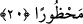
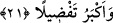

O kimse de âhireti arzular, âhiret için çalışır. Bu ise mü’min olarak sıdk ile talebdir.
Çünkü onu isteyen bulur. İşte bu kimselerin varlık âlemindeki çalışmaları, ezelde
yaratan Allah tarafından makbuldür.
20. Hepsine, onlara da bunlara da Rabbinin ihsanından veririz. Rabbinin ihsanı
kısıtlanmış değildir.
“Hepsine,” yâni, dünya ve âhireti isteyenlerden her birine “onlara da bunlara da”
yâni dünyada âcilen nimetlere kavuşanlara da, amelleri Allah katında makbul olanlara
da “Rabbinin ihsânından veririz.” Rabbinin engin, nihâyetsiz ihsânından artırırız. Öyle
ki şimdiki öncekine destek olur. Onu kesmez, esirgemeyiz. Kendisiyle imdad edilen şey,
birine dünyevî ihsanlardan âcil olarak verilen, diğerine ise çalışmasının makbul
olmasıyla işâret edildiği gibi daha sonraya te’cîl edilerek verilen ihsanlardır. Burada
yardımın ne ile olacağı zikredilmemiştir. Zikredilen yardım da çalışma ve amele
karşılık değildir, bilakis sırf Allah Teâlâ’nın fazlı ve ihsânıdır.
“Rabbinin ihsanı kısıtlanmış değildir.” Rabbinin sâlih olsun, günahkâr olsun dilediği
kimseye, dünyevî ve uhrevî ihsanı kısıtlanmış, yasaklanmış değildir. Aksine iyi
kimselere dünyada ve âhirette, fâcirlere de onlara ihsanda bulunmasını engelleyen
günah ve küfür bulunmasına rağmen yalnızca dünyada akmakta ve taşmaktadır.
Şeyh Sa‘dî der ki:
Yeryüzü O’nun umûmî sofrasıdır
Bu yağma sofrada dost düşman eşittir
Cenâb-ı Hak perde arkasından kötü amelleri görür
Hem de kendisini örter, gizler
Eğer senin sanatın halka zulüm ve cefa ise,
O’nun kahır elinden nasıl eman bulursun?
21. İnsanların kimini kiminden nasıl üstün kıldığımıza bir bak! Elbette ki âhiret,
derece ve üstünlük bakımından daha büyüktür.
“İnsanların kimini kiminden nasıl üstün kıldığımıza bir bak!” yâni ey Muhammed!
kendilerine dünyevî ihsanlarda bulunarak insanlardan bir kısmını diğerlerine nasıl üstün